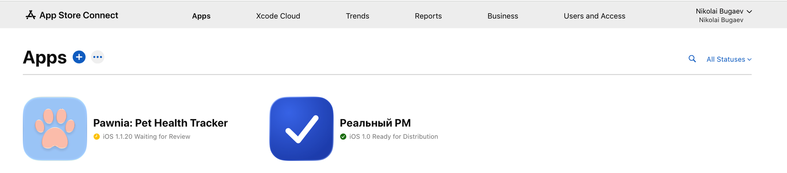

1.1 Создание записи приложения в App Store Connect
Предполагается, что у тебя уже есть активный Apple Developer Program аккаунт (юрлицо или individual, $99/год) и договор подписан. Если аккаунта ещё нет — это отдельный процесс регистрации у Apple, сюда не входит.
Открой App Store Connect → Apps
Это главный список всех приложений, привязанных к твоей учётной записи разработчика. Каждая карточка — одно приложение, независимо от того, сколько у него платформ (iOS/Android здесь не при чём — Android живёт в отдельной Google Play Console, Часть 2).

Кнопка «+» — New App
Создаёт новую запись приложения: указываешь платформу (iOS/macOS/tvOS/visionOS), название, основной язык, Bundle ID и SKU (внутренний артикул, пользователь его не видит).
Документация Apple →Меню «⋯»
Массовые действия со списком приложений — экспорт, фильтры по команде/роли. Для создания нового приложения чаще используют «+» слева.
Раздел «Apps»
Это и есть тот самый список. Остальные пункты верхнего меню (Xcode Cloud, Trends, Reports, Business, Users and Access) относятся к CI/CD, аналитике и управлению командой — в этом плейбуке не рассматриваются.
Фильтр «All Statuses»
Фильтрует список по статусу: Ready for Distribution, Waiting for Review, Rejected, In Review, Prepare for Submission и т.д. Полезно, когда у аккаунта много приложений.
Карточка приложения
Клик по строке открывает приложение — оттуда ты управляешь версиями, TestFlight, App Privacy, ценой и подаёшь на ревью. Это твоя «домашняя страница» для каждого отдельного приложения.
Статус версии
Ready for Distribution — версия уже опубликована и доступна пользователям. Waiting for Review — отправлена на проверку Apple, ждёт очереди (обычно от нескольких часов до 1–2 суток). Полный список статусов — по ссылке ниже.
Статусы версий →Заполни форму New App
После клика по «+» → New App откроется форма. Разберём каждое поле — этот блок доделываем на следующем шаге, когда пройдём его живьём.